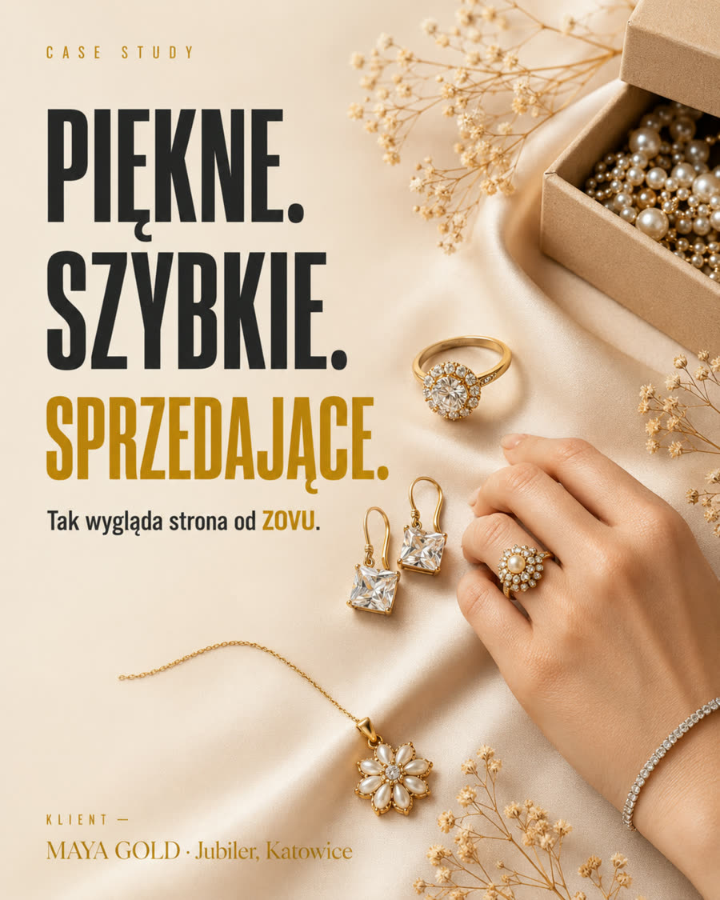
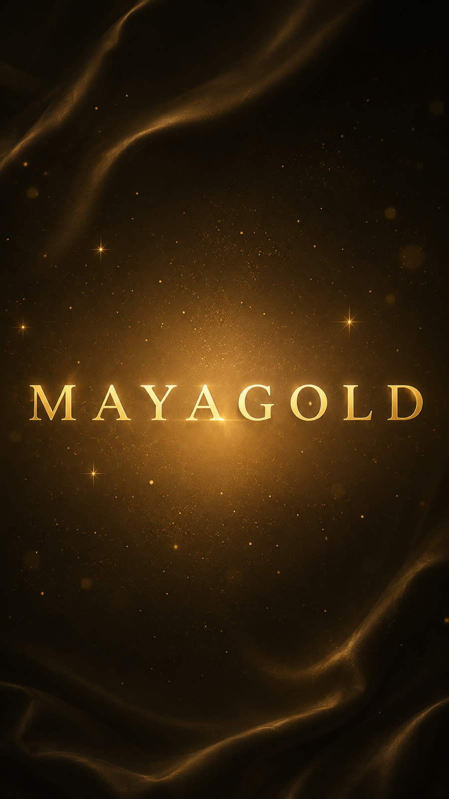
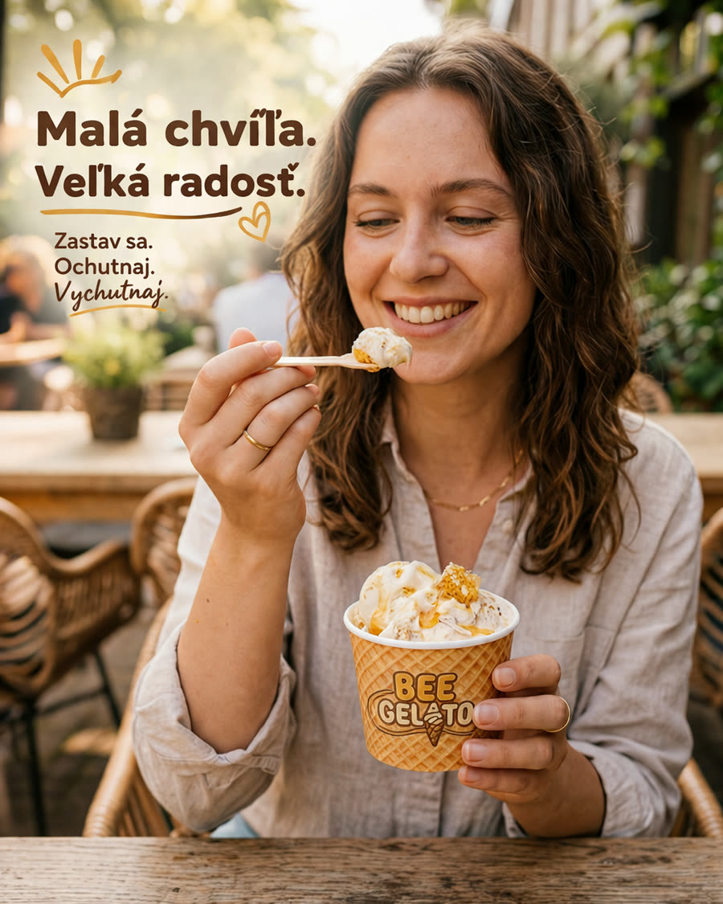
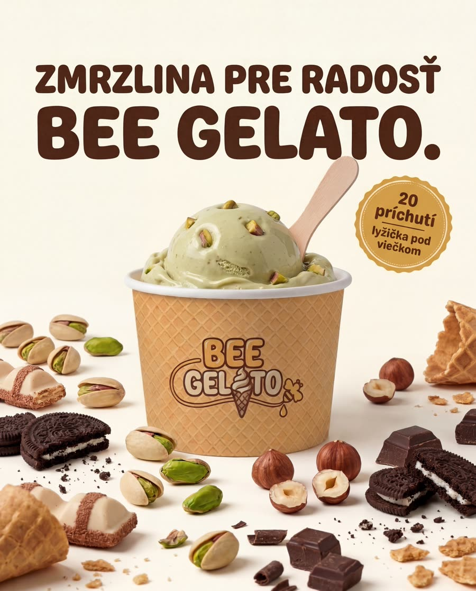

ZOVU · selected ad work
Two brands where the product photograph does the selling and the type stays out of its way. Both were built inside an existing brand identity — the guidelines, the shots and the palette came from the client, the layouts and the motion are mine.
Paid social · jeweller
An independent jeweller — the closest thing in my portfolio to a fashion & accessories brand. I built their shop and the visual language around it. Product shots on a warm neutral ground, one bold line of type, everything else quiet.


Paid social · food retail
A gelato brand in Slovak. Here the job was volume: one identity, several placements, model shots and product shots handled in the same visual language so a feed of them reads as one brand.


1400 PLN / month, covering up to 25 static creatives and 3 short video cuts, plus format adaptations of those same pieces across placements.
Adaptations of an approved layout into another size are not billed as new creatives — that is the same idea, resized.
Hourly, if you prefer it: 60 PLN.
Turnaround: 48 h on a static set, 3 working days on video.
ZOVU — Katowice, Poland. Built for one enquiry; not linked from anywhere.